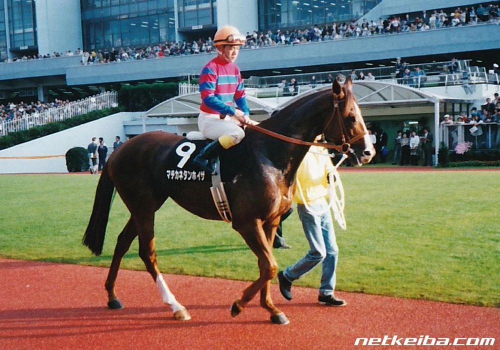

Матиканэ Тангейзер — девушка с волнистыми светло-каштановыми волосами длиной чуть дальше плеч. У неё янтарно-желтые глаза. Она носит
сине-фиолетовую кепку с белым козырьком и белым ромбовидным узором, а сбоку — розовую ленту. Ее гоночный костюм выполнен в стиле немецких народных
костюмов: белая блузка с открытыми плечами и рюшами, синяя мини-юбка с красным корсетом и красными носками, а также длинные ботинки
на шнуровке.
Ее стиль одежды основан на немецких народных костюмах, что соответствует происхождению ее имени.
В Uma Musume у всех лошадей есть украшение (обычно бантик) на одном из ушей. Украшение на правом
ухе означает, что настоящая лошадь была жеребцом, на левом ухе — кобылой. У Матиканэ Тангейзер бусины
на правом ухе, т.к. Матиканэ Тангейзер в реальной жизни действительно является жеребцом.
Белая фигура на её кепке, каштановый цвет её волос и белая прядь напоминают окрас настоящего Матиканэ
Тангейзер.
Матиканэ Тангейзер в игре и реальной жизни
Цветовая палитра её гоночного наряда напоминает костюм её жокея.

Матиканэ Тангейзер и его жокей
О Матиканэ Тангейзер
Матиканэ Тангейзер (7 мая 1989 г. — 7 декабря 2013 г.) — японская чистокровная скаковая лошадь,
жеребец, победитель скачек Мегуро Кинен и Даймонд Стэйкс в 1993 году, а также Кубка Американского
жокейского клуба в 1994 году и Такамацуномия Кинен в 1995 году. Был известен за свои проблемы со
здоровьем, из-за которых был дважды отстранен от участия в гонках.
Имя на японском: マチカネタンンイイザ
Происхождение имени:
Матиканэ — название клана. Это также название горы в регионе Осака, откуда родом владелец лошади, Масуо Хосокава.
Тангейзер — немецкая опера, созданная Рихардом Вагнером в 1845 году.
Его официальное международное имя пишется как "Matikanetannhauser", слитно, потому что в противном случае оно бы превысило допустимое количество символов для имени скаковой лошади — 18 символов.
История гонок: [8-2-2-20], включая победы в AJCC 1994 (G2) и Такамацуномия Хай 1995 (G2).
Интересные факты
Настоящий Матиканэ Тангейзер
Настоящий Матиканэ Тангейзер был известен в основном за множество заболеваний, перенесенных им в
1993-95 годах, из-за которых он иногда отстранялся от скачек. Это было настолько частым явлением, что
его прозвали "универмагом болезней" (病気のデパート).
У него часто были носовые кровотечения.
В игре в её тренировочном сценарии одной из целей является финишировать выше третьего места на
Кубке Японии. Однако, по сценарию, Матиканэ Тангейзер отстраняют от гонки в последнюю минуту из-за
кровотечения из носа, поэтому игрокам не приходится выполнять это задание и они автоматически
переходят к следующему. На самом деле это именно то, что произошло с настоящим Матиканэ Тангейзер
перед Кубком Японии 1994 года.
Однажды (перед Арима Кинен 1994 года) он случайно съел паука во сне, и считалось, что это стало
причиной его крапивницы. Правда это или нет, остаётся спорным вопросом. Но из-за этого
Матиканэ Тангейзер в игре боится пауков.
Матиканэ Тангейзер и Матиканэ Фукукитару являются хорошими друзьями и соседями по комнате в игре,
что основано на том, что они вместе проживали на ферме Kosuta Farm после окончания своих карьер.
Матиканэ Тангейзер и Матиканэ Фукукитару
Коронная фраза Матиканэ Тангейзер в игре "Эй, эй, мун!" является вариацией популярной японской
кричалки "Эй, эй, о!".
Ее семья в игре владеет рестораном. Это отсылает к ферме настоящего Матиканэ Тангейзер,
где есть ресторан для посетителей, приезжающих ради опыта езды на лошадях.
Первый секрет в описании Матиканэ Тангейзер в игре гласит: "Шляпа, которую она сейчас носит, уже
третья по счету". Вероятно, это относится к трем жокеям, которых Матиканэ Тангейзер назначали в
последнюю минуту в течении его карьеры: Масато Сибата > Кацухару Танака > Ютака Такэ.
Второй секрет в описании Матиканэ Тангейзер в игре гласит: "У нее уникальное чувство подбора имен".
Возможно отсылка к тому, как клан Матиканэ называет своих лошадей.